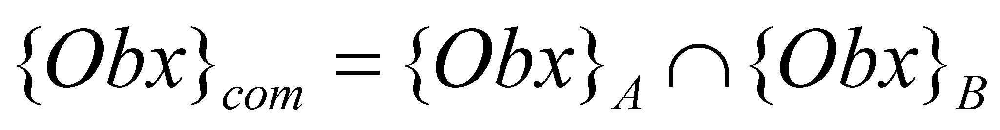

|
|
|
As we have noticed so far, a certain IPS associates to a specific object_name or to a specific process_name a total amount of the semantic information stored into its memory, regarding these abstract objects. According to the common language, this total semantic information amount associated with a certain name is also called the notion’s domain (or the notion’s sphere), the notion being the name of a class of abstract objects. We have deliberately mentioned that we are talking about a certain IPS, because even if two or more IPS which are communicating one another are structurally identical, more exactly, they have similar information processing performances, it is unlikely that the semantic information associated by each IPS to a certain name to be similar, otherwise speaking, the domains of the notions found in the memory of different IPS are different as well.
The reason why these differences occur are due to the fact that each IPS has its own temporal existence domain, lasting from its birth until the communication moment, which is a different domain as compared to other IPS, and during its lifetime, each IPS assimilates different semantic information amounts (it has, as it is saying, its own life experience, its own cognition level and an individual learning capacity). If we are assuming that we have two IPS, for instance, SPIA and SPIB which both know the same language, each of them will associate to the same notion Obx a specific domain of the notion {Obx}A, {Obx}B respectively, which are quite different and their size depends on the cognition degree of each IPS regarding the notion Obx. In case of a communication between SPIA and SPIB, when receiving the name Obx, each IPS shall make its own recollection of the cognition domain associated to this name. Since the domains {Obx}A and {Obx}B may be different, only the common component of the two domains will be effectively transmitted in the communication process. But, this component is the intersection of the domains (notion’s spheres) stored into the memory of the two IPS:
 (9.3.3.1)
Because the intesection of two different domains is less-sized than any of the domains which are intersected one another, it also results that the information amount transmitted through communication is lower than any of the information amounts stored into the participants’memory. Only under the hypothetical assumption when the two IPS have the same notions domains, information losses don’t exist.
Copyright © 2006-2011 Aurel Rusu. All rights reserved.